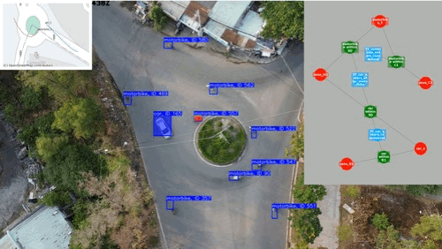

GICEDCAM — Geospatial Complex Event Detection
A multi-layered pipeline (edge → stateless → stateful) for detecting spatial, temporal, and complex events across IoT and video streams. Includes trajectory correction and spatial-RAG with a knowledge graph.
Python AWS Lambda Apache Flink SQL NoSQL AWS Kinesis Bash scripting Terraform Serverless ETL Docker CI/CD Neo4J